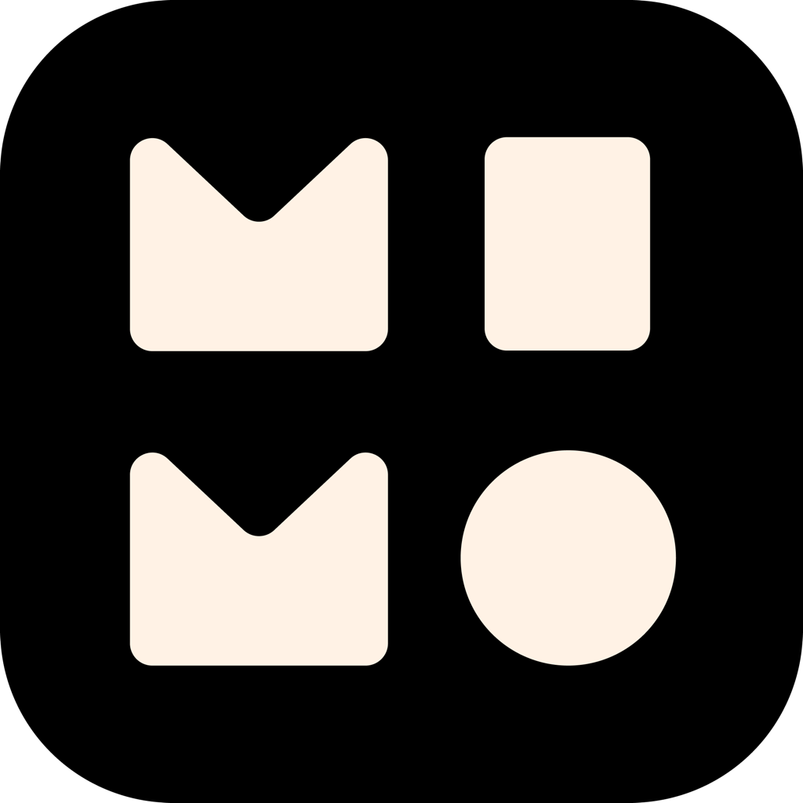
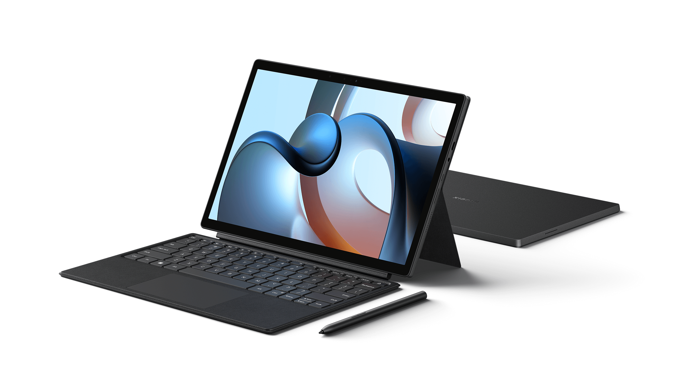
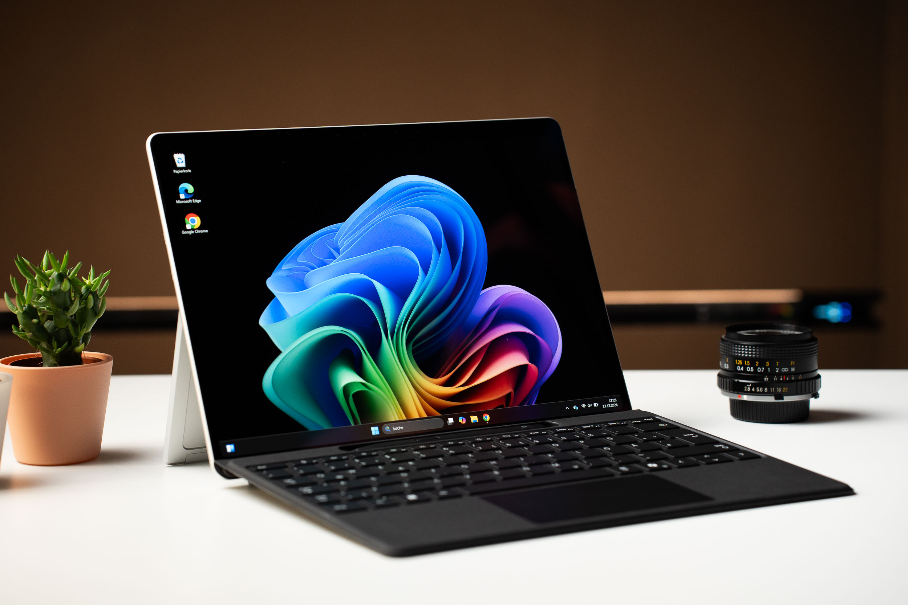
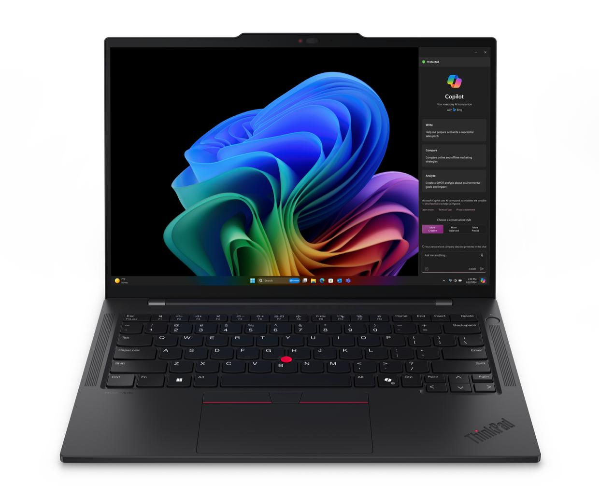
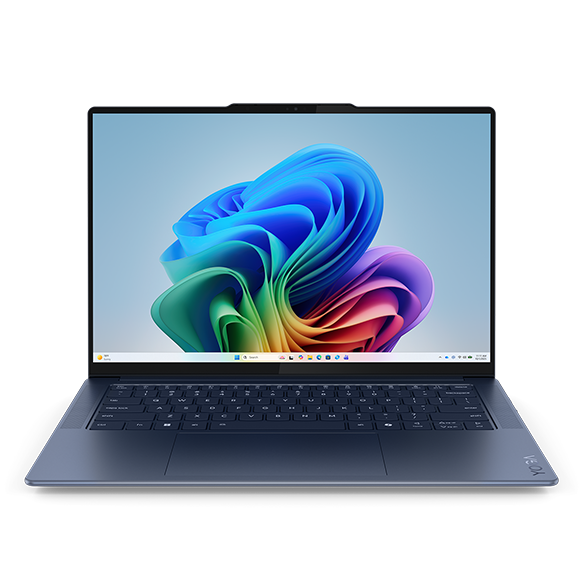
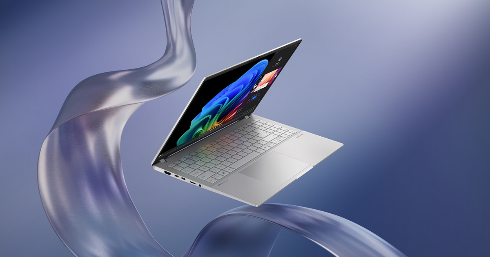
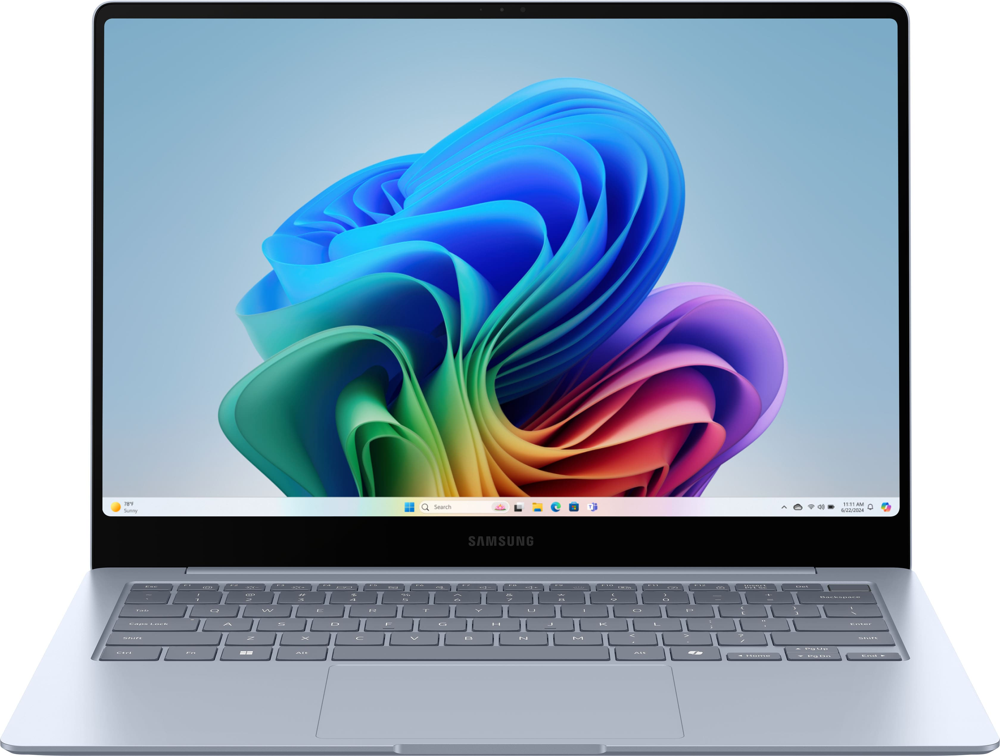
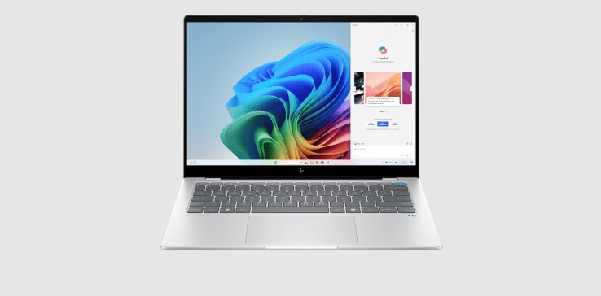
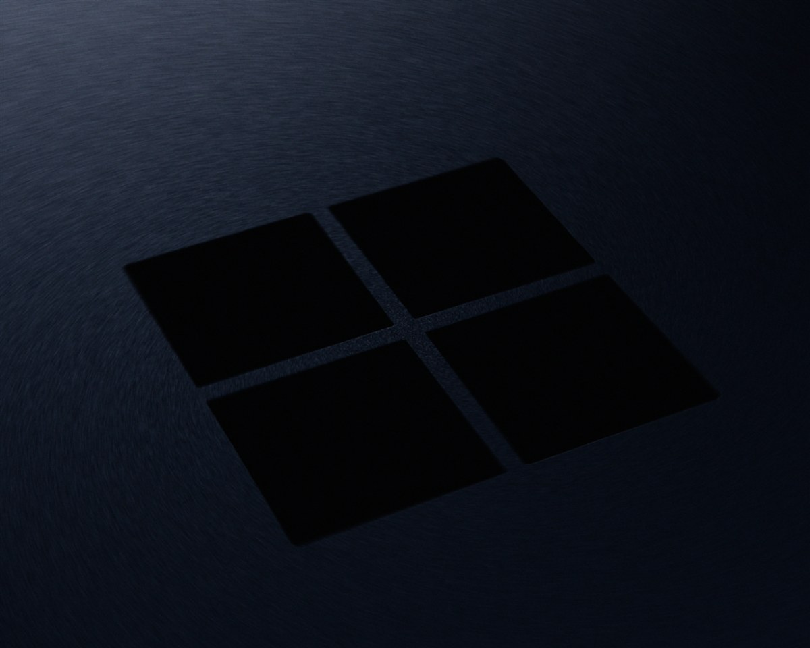

COLD START
2.65×
更快的启动
T1 list-ready · 10-run
AI生成
TECHNICAL PREVIEW · 2026
已发行 Electron 应用原生运行于win32-arm64 平台的新探索
A technical preview of native ARM64 portability.
SETUP · NOT A PRESS RELEASE
MiMo
model

MiMo
Desktop · agent

Timi
Xiaomi Book S
MiMo-on-MiMo-on-Timi.
A closed-source Electron app, post-market ported to native Windows on ARM — by the app itself.
Xiaomi Book S 12.4 · Snapdragon 8cx Gen 2 · Windows 11 ARM64
WHY MI-MI-MI?
COLD START
2.65×
更快的启动
T1 list-ready · 10-run
IPC
3.3×
更快的响应
engFetch · 会话就绪
RUNTIME
Native
更低运行开销
ARM64 · fewer cycles
POWER
Fewer
理论上更省电
unnecessary instructions
We believe native ARM64 can provide a better experience.
证据链：功能分段 · 10 次冷启动 · CDP 里程碑 + engine 日志。下三页展开。
WHY · TWO STARTUP LINES
ARM64 13.3s / x64 31.2s · bench-functional 20260926-2258 · 冷启动 · 18 会话。x64 在 F2 Logo 与 F3 侧栏两段拉出主差距。
WHY · THREE BOTTLENECKS
壳冷启
spawn · sandbox · GPU · asar
主 bundle
Age localStorage + APM oQ
会话 DB
listGlobal SQL + 187KB JSON
TOTAL T1 GAP
+17.8s
13.3s vs 31.2s · 2.3× · 窗体本身只差 1.2×
次级：app:// 静态 SVG 845ms vs 213ms（4×）、wasm 322ms vs 49ms。首绘被 A/B 拖住（FCP 4.7s vs 15.7s）。
WHY · HOT FUNCTIONS
HERO · HOT FUNCTION
2685ms
同步 localStorage 在 x64 模拟层 = sync IPC
APM
1255ms
flush→sendEvents→_postJson
REACT
185ms
正常 3× · 次要因素
SAMPLE
81%→34%
x64 在烧 CPU
来源：cdp Profiler · cpuprof-ARM64-001929 / x64-001940 · index-C2vAeNdg.js:184。
WHY · WHAT THEY DO
启动链：spawn/readFileUtf8/init3/IPC → Age/i18n/React mount → C 量布局 + oQ 上报 → engFetch 列表。x64 慢在同步 IPC 与启动注册被放大。
THE STATUS QUO
SoC 原生 ARM64，Windows 亦为 ARM64。缺的只是应用二进制。
x64 PE + x64 native addon 走模拟层。同步 IPC、存储、布局量测被放大 2–50×。
T1 列表就绪 13.3s → 31.2s。「最近工作」晚出，FCP 4.7s → 15.7s。
同版本 Electron ARM64 壳 + 全 ARM64 native → 砍掉中间层。Post-market 二进制嫁接。
THE PATH
Before
After
MIGRATION
EVIDENCE
不知道你能否接住我的笑话的包袱。 总之先研究一下你工作在哪台计算机上。 /compose-next … 现在的 Xiaomi MiMo.exe 位于 C:\Users\xiaomi\AppData\Local\Programs\ Xiaomi MiMo，工作在体系结构 x64 上。 而它是一个 Electron。所以我在探索 Electron 的可移植性边界。目标是在 Post-Market 状态下 （没有源代码和构建环境）让 MiMo Desktop 运行在 ARM64 原生二进制上。 「你在关掉出错的移植的时候 把你自己也关掉了。」
[boot] version=26.923.232338
platform=win32 arch=x64 ← before
[boot] version=26.923.232338
platform=win32 arch=arm64 ← after
skia.win32-arm64-msvc.node
runtimes/win32-arm64/node/node.exe
loadEngineSessions fetch=2796ms ← ARM64 · 10-run
loadEngineSessions fetch=9161ms ← x64 · 10-run
RESULTS · 10-RUN BENCH
WARM START
热启动重复测量，结果一致。
*Same environment. Same workload. Repeated runs.
ANOTHER REASON
我无法理解。
小米的笔记本。
小米的 Agent。
小米的 Windows 客户端。
为什么还要转译？
THE ONLY EMOTIONAL LINE
吸管吃圣代。
A Xiaomi laptop. A Xiaomi Agent. Through x64 emulation.
WINDOWS ON ARM · 渗透率
占整体笔记本出货：2025 年仅 1.2%；2020–2024（8cx 时代起）无同口径公开数据，断线不补。开发者眼里的「受众还在早期」。
来源：TrendForce（2026-06 报告 · 占整体笔记本出货）。旁证：Omdia（2024-08）Arm+Windows AI 笔记本出货 80 万台（绝对量口径，不可与本线混用）。
WINDOWS ON ARM · 可寻址基数
占整体 PC 出货（含苹果 Mac）：2020 年 1.4% → 2025 年约 13%。2021、2024 年无同口径公开数据。装机即受众。
来源：亿欧智库《2023 年中国 PC 市场研究报告》（2020=1.4%、2022=12.8%、2027E=26.7%）· 芯智讯（2023≈15%）· ABI Research（2025=13%）· Counterpoint（2027E=25%）。2021、2024 年无同口径数据，断线不补。
WINDOWS ON ARM · 移植回报
占用户使用时长（total user minutes）：2025-09 微软首次给出 90%——2021–2024 无同口径公开数据。原生化过临界，移植才有回报。
来源：Microsoft Windows Blogs（2025-09-18，Mike Adams）：「native Arm versions available for apps representing 90% of total user minutes」。2021–2024 官方无同口径公布。
WINDOWS ON ARM · 工具链
前期 WoA 主打 Developers：原生 IDE、Arm64 CI、可复现的 runs-on 标签——从写到跑已经闭环。
来源：VS Blog《Arm64 Visual Studio is officially here!》2022-11-08 · GitHub Changelog 2025-01-16 / 2025-04-14（当时为公开预览）· Windows Developer Blog 2025-04-14 · GitHub Changelog 2026-08-20（GA）。只列有一手公告的里程碑，不为工具链编造百分比曲线。
SNAPDRAGON X · 机型
2024 年首发的骁龙 X Elite 阵容：商务、创作、二合一，全线都有 WoA 选项。

Snapdragon X Elite · X1E-80-100
13" 2880×1920 OLED · 895g

Snapdragon X Elite
14" · 1.24kg · 58Wh

Snapdragon X Elite · X1E-78-100
14.5" 3K OLED · 1.28kg

Snapdragon X Elite
15.6" 3K OLED · 32GB + 1TB

Snapdragon X Elite · X1E-80-100
14" 3K AMOLED · 55.9Wh

Snapdragon X Elite · X1E-78-100
轻薄商务 · 65W 适配器

NVIDIA RTX Spark · N1X
20 核 Arm + Blackwell · 128GB · 未发售（2026 秋）
来源：各厂商产品页与 2024–2026 发布信息，规格以官方为准。第二代骁龙 X2 已于 2025-09 峰会发布；NVIDIA RTX Spark（N1X）由英伟达与微软 2026-05-31 公布，Surface Laptop Ultra 首发，首批机型 2026 秋季上市。
TO XIAOMI CORPORATION
Now it's your turn. — README《To Dear Xiaomi Corporation》
TRICK 01 · PATH DISGUISE
Resolver asks for
Loader actually reads
解析层只认路径字符串，装载层只看 PE 头。名实分离——保留 asar 寻找的路径，更换里面的二进制。
TRICK 02 · ASAR BYPASS
Relative require
Absolute path
unpacked:true 允许改 JS，但相对 require 仍走 asar fs。把路径钉死到 app.asar.unpacked，才真正落到磁盘。
AGENT · COMPOSE
SPEC
T1–T10
全部勾选
electron-arm64-port.md
PURITY
43/45
PE = ARM64
95.6% · 架构审计
COLD START
2.65×
更快落地
瓶颈在模拟层 V8，不是渲染
Post-Market binary grafting: x64 → ARM64, no source, no vendor toolchain.
同一场对话完成迁移、验证、基准与开源整理——MiMo migrating MiMo on Timi.
TRICK 03 · SURGICAL PATCH
同长才不撕裂 asar 头；绑定层继续说 x64，磁盘上的真相已是 ARM64。
OPEN
用 MiMo 把 MiMo 从 x64 移植到 ARM64，又用 MiMo 生成介绍它的视频——这甚至已经超出彩蛋的范畴。MIT · Experimental research, not an official Xiaomi project.
FORK IT
克隆、拆开、复现、挑刺——开源不是姿态，是可复跑的工程。
EXPERIMENTAL · OPEN · ARM64
MiMo-on-MiMo-on-Timi.
一项严肃的 portability research，
也是一次精神状态驱动的工程项目。
Because we couldn't accept the straw.